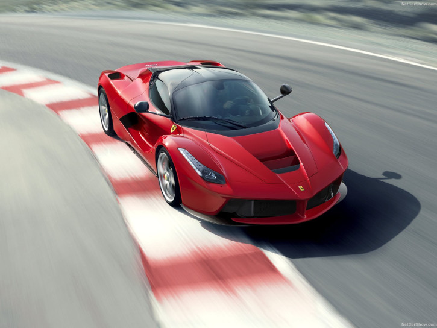

Ferrari LaFerrari
Specifications
Power: 963 hp
Torque: 900 Nm
0 to 100 kph: 2.6 s
Top Speed: 350 kph
Weight: 1585 kg
Weight distribution (front/rear): 41%/59%
Vehicle Type:
mid engine, mid motor, rear wheel drive, 2 passenger, 2 door coupe
Engine:
Type: (Hybrid) V12, electric motor
Displacement: 6262 cc
Power: 800 hp @ 9000 rpm
Torque: 700 Nm @ 6750 rpm
Maximum revs: 9250 rpm
Electric Motor:
Power: 163 hp @ 4900 rpm
Torque: 200 Nm @ 0 rpm
Transmission: 7-speed dual clutch automatic with manual shifting mode
Price: $1,750,000; ₹ 10.47 crores
Related Links
Official site
More info @ wikipedia
Wallpapers
Youtube
Reviews
- 
{kind=link}
{kind=link}
{kind=link}
{kind=link}
{kind=link}
{kind=link}
{kind=link}
{kind=link}
{kind=link}
{kind=link}
{kind=link}
{kind=link}
{kind=link}
{kind=link}
{kind=link}
{kind=link}
{kind=link}
The wraps are finally off the LaFerrari. The Prancing Horse's eagerly-anticipated limited-series special, of which just 499 will be built, made its world debut at the 2013 Geneva International Motor Show.
"We chose to call this model LaFerrari," declared Ferrari's President, Luca di Montezemolo, "because it is the maximum expression of what defines our company - excellence. Excellence in terms of technological innovation, performance, visionary styling and the sheer thrill of driving. Aimed at our collectors, this is a truly extraordinary car which encompasses advanced solutions that, in the future, will find their way onto the rest of the range, and it represents the benchmark for the entire automotive industry. LaFerrari is the finest expression of our company's unique, unparalleled engineering and design know-how, including that acquired in Formula 1."
For Ferrari the development of a limited-series special like the LaFerrari represents an opportunity to experiment with all the technological solutions that will later filter down onto the production cars. Of particular significance in this context is the introduction of the hybrid system which, making full use of the Scuderia Ferrari's F1 KERS know-how, has resulted in a solution that exalts Ferrari's fundamental values - performance and driving thrills. The hybrid technology used, known as HY-KERS, represents the perfect combination of maximum performance and lower emissions. LaFerrari in fact emits just 330 g/km of CO2 but without resorting to electric-only drive which would not fit the mission of this model. The HY-KERS system is, however, designed so that in future applications a car can be driven using exclusively electric power for a few kilometres and, during development testing, a full-electric version of LaFerrari achieved just 220 g/km of C02 emissions on the combined cycle.
The LaFerrari is equipped with dynamic controls that are integrated for the first time ever on a Ferrari road car with active aerodynamics and the HY-KERS system. Thanks to Ferrari's proprietary logic which govern all the systems, the car can achieve absolute levels of performance, aerodynamic efficiency and handling without any form of compromise in any area. A very advanced and uncompromising approach was also taken with the interior design which features an HMI inspired by F1 single-seaters.
Architecture
The LaFerrari's architecture posed the first challenge for the Prancing Horse team at the planning stage of the design. The aim was to achieve ideal weight distribution (59% at the rear) and a compact wheelbase despite the extra bulk of the hybrid system. The result is that all of the masses are situated between the car's two axles and as close as possible to the floor to lower its centre of gravity (by 35 millimetres) and thereby guarantee dynamic handling and compact dimensions.
The layout of the cabin made a significant contribution in this regard. The seat is fixed and tailored to the driver while both the pedal box and steering wheel are adjustable. The driving position is similar to that of a single-seater and was designed after consultation with the Scuderia Ferrari drivers, Fernando Alonso and Felipe Massa, who played an active role throughout the entire development process.
The LaFerrari's chassis features no less than four different types of carbon-fibre, all hand-laminated and autoclave-cured in the racing department using the same design and production methods as the Formula 1 car. This helped optimise the design: various functions were integrated (e.g. seats and battery compartment) into the chassis to improve torsional rigidity (+27%) and beam stiffness (+22%) whilst cutting weight.
Powertrain
The LaFerrari is the first car in Ferrari history to be powered by the HY-KERS system. The ICE represents the pinnacle of engine development and research, with a 6262 cc V12 that punches out 800 CV and revs to a maximum of 9,250 rpm, a record for an engine of this displacement. It also features a very high 13.5:1 compression ratio and a high specific output equal to 128 CV per litre. The engine is coupled with a 120 Kw (163 CV) electric motor, giving it a combined power output of 963 CV.
The high torque levels available at low revs from the electric motor allowed the engineers to optimise the internal combustion engine's performance at higher revs, thus providing a constant supply of exceptional power throughout the rev range. Total torque generated is in excess of 900 Nm. The hybrid system is composed of two electric motors developed in collaboration with Magneti Marelli - one powering the driven wheels and the second the ancillaries - and a battery pack attached to the floor of the chassis consisting of cells that are assembled in the Scuderia Ferrari department where the KERS for the F138 is also made. The Scuderia's expertise allowed considerable savings in weight and size of the individual components and the batteries weigh just 60 kg while providing the highest energy density possible for this kind of application.
The batteries are charged in different ways: under braking (even hard braking with the ABS active) and every time the V12 produces more torque than required, such as in cornering. In the latter instance, rather than the being sent to the wheels, the excess torque is converted to energy and stored in the batteries.
The electric motor is coupled with the F1 dual-clutch gearbox to the benefit of optimal weight distribution, but also to boosting energy efficiency as torque is instantly available to the wheels and, vice versa, from the wheels to the electric motor in recharging.
Aerodynamics
Active aerodynamics play an essential role, as they allow a complete adjustability of the car's configuration to attain LaFerrari's exceptional performance.
The engineers' aim was to deliver the highest degree of aerodynamic efficiency ever achieved with any road car, with a coefficient of nearly 3, thanks to technical solutions honed with CFD analysis and fine-tuned in the F1 Wind Tunnel.
To boost efficiency, the LaFerrari sports active aerodynamic devices front (diffusers and guide vane on the underbody) and rear (diffusers and rear spoiler) which generate downforce when needed without compromising the car's overall drag coefficient. These devices deploy automatically on the basis of a number of different performance parameters which are monitored in real time by the car's dynamic vehicle controls, thus guaranteeing the ideal configuration on the basis of the driving conditions.
Control systems
One further innovative aspect of the LaFerrari is the integration of its active aerodynamics and hybrid system with the other dynamic control systems aboard. This means the car responds intelligently to driver inputs, making for a seamless blend of unprecedented performance and unparalleled driving emotions.
Proprietary Ferrari algorithms deliver optimal integration of the electric motor and V12 for instantaneous response. In cornering, for instance, the HY-KERS keeps the V12's revs high to guarantee better acceleration on exit.
The LaFerrari's Brembo braking system is also integrated with the hybrid system, and incorporates several new features, including new lightweight callipers designed to guarantee correct cooling and carbon-ceramic material (CCM) discs featuring a new composition.
The car's extreme performance potential called for a different tyre set-up, with 265/30 R 19 Pirelli P-Zeros on the front and 345/30 R 20s on the rear.
All in all the car guarantees maximum driving thrills in every situation and performance levels are top level: 0-100 km/h in less than 3 seconds and 0-200 km/h in under 7 seconds, a lap time at Fiorano of under 1'20" - 5 seconds faster than the Enzo and over 3 seconds faster than the F12 berlinetta. LaFerrari is thus the fastest road car in Maranello's long history.
Styling The Ferrari design team led by Flavio Manzoni developed the LaFerrari's styling working in close synergy with the engineers to emphasise the exacting link between form and function. The result is an extreme, innovative design which retains close links to the marque's tradition. This is most evident in its side profile: the car has a sharp, downward-sloping nose and a very low bonnet which emphasises its muscular wheelarches, a clear nod to the gloriously exuberant forms of late-1960s Ferrari sports prototypes.
The LaFerrari's body has been given a sculptural treatment heavily influenced by its clearly F1-inspired aerodynamics and a tail section that exudes uncompromising sportiness.
Inside there's a newly-designed steering wheel sporting all the major commands, and the gear-shift paddles are now longer and more ergonomic. The signature bridge on which the F1 gearbox functions are clustered has taken on a sleek, suspended wing-like shape. The whole interior, in fact, has a fiercely track-inspired, pared-back allure.